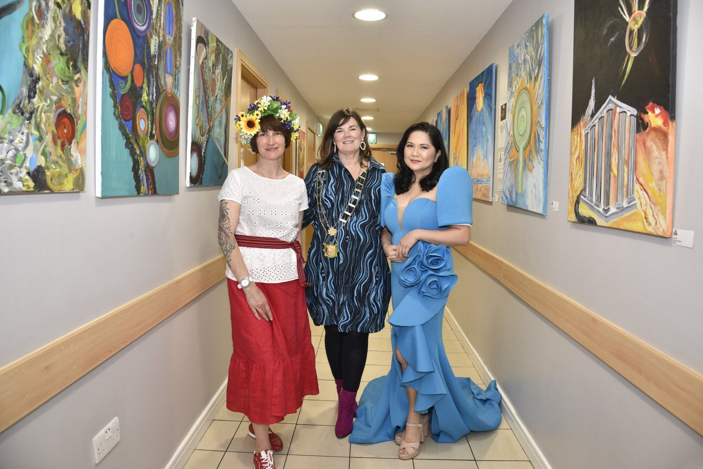
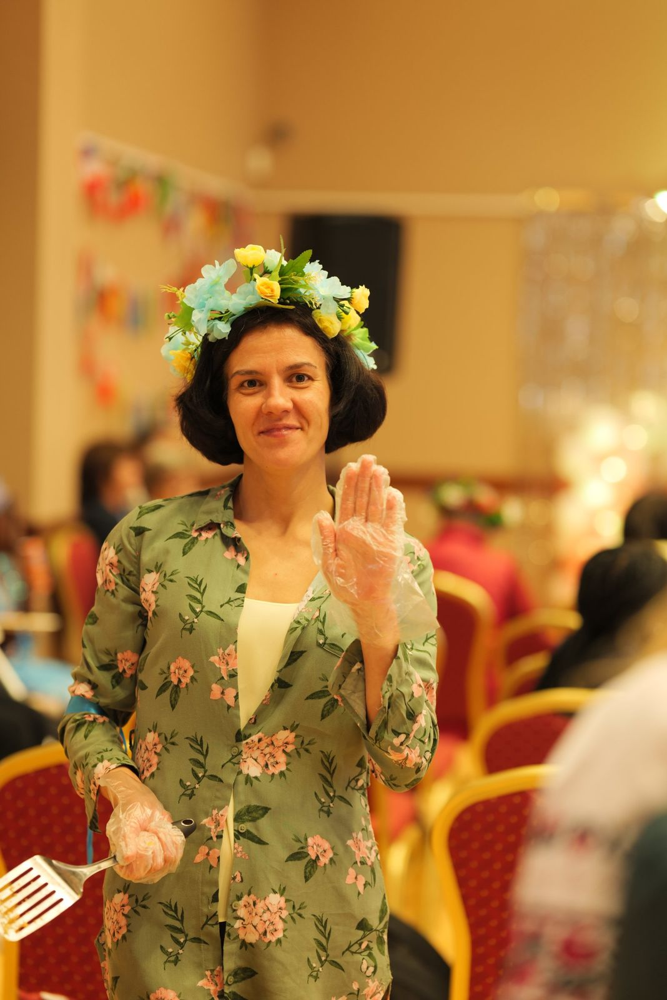
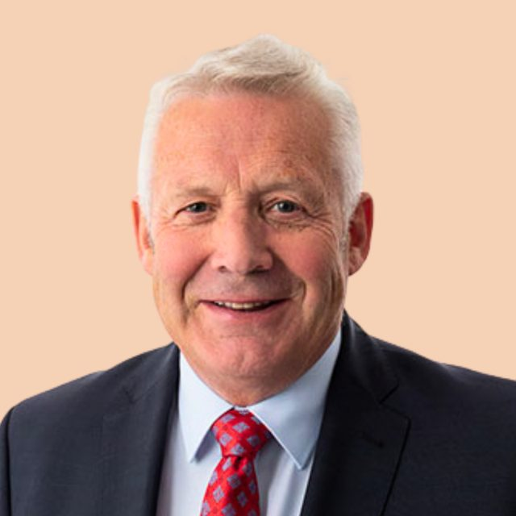
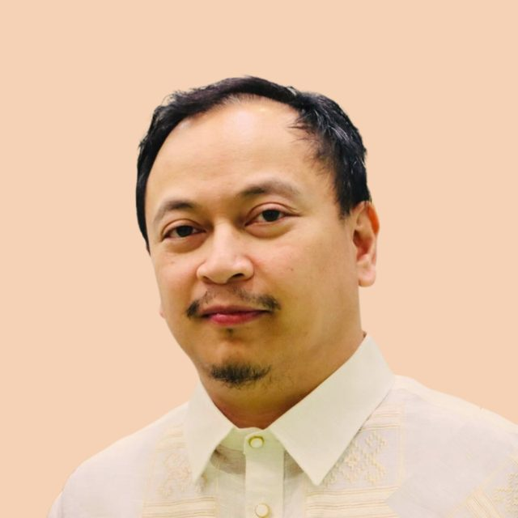
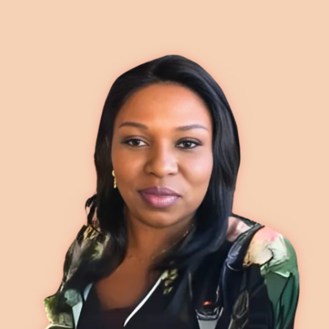
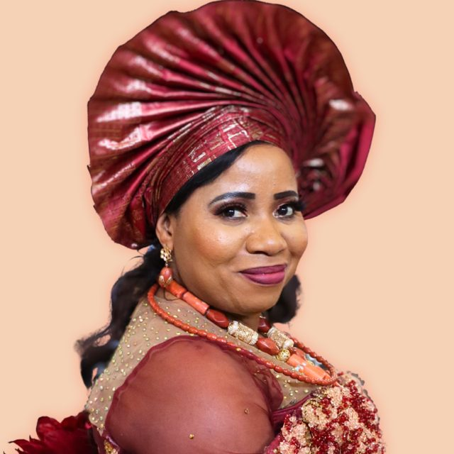
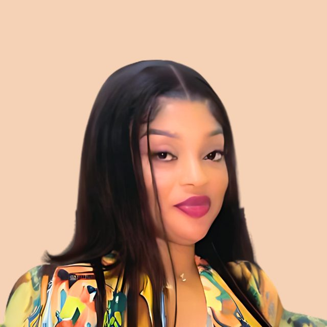
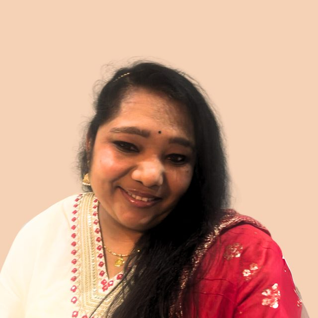

Who we are
About Us
A support network uniting women and families of all races, in Drogheda and beyond.
Our vision
A community where care knows no borders
Our vision is to unite women and families of all races in a supportive, inclusive environment.
We strive to foster a community where care knows no borders, love is undivided, and help is offered without distinction. Our goal is to empower women to become change-makers and leaders in their communities. We will achieve this by providing essential life skills, resources, opportunities, and a global platform for networking, learning and sharing experiences, enabling women and their families to reach their full potential.


Our mission
Empowering women to become change-makers and leaders
We aim to bring women and families of all races together to network and support each other in an environment where care knows no borders, love has no divides, and help has no differentiation.
Our goal is to empower women to become change-makers and leaders in their communities. We aspire to provide women from all walks of life with the basic tools they need to reach their full potential.
We equip women and their families with resources, opportunities and a global platform that facilitates networking, learning and the sharing of experiences. Among our beneficiaries, we prioritise professional development, academic excellence and leadership development.
Our objective
What we do
Fostering economic empowerment and inclusive integration for migrant and host community women through networking, education, job access and social support.
Job seekers help
Free CV clinics, mentoring and coaching sessions for job seekers.
Online healthcare
Access to online healthcare for women in less privileged communities.
Support to communities
Encouraging members to tackle health and educational issues in their communities.
Integration
Rehabilitation and integration services for women in need.
Meet our team
The people behind Hands 4 Unity
Our board and committee members come from many of the communities we serve, and give their time as volunteers.
Board of directors & officers
-

-

-

Ambassadors & committee representatives
-

-

-

We need your help
Hands 4 Unity relies on the generosity of individuals to do our work. If you would like to support our causes, please consider donating.